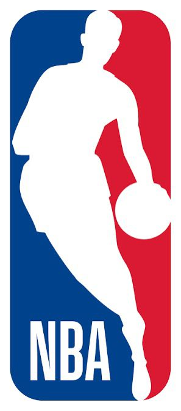

Creación
El básquetbol fue creado en 1891 por James Naismith en Estados Unidos. Su objetivo era inventar un deporte divertido que pudiera jugarse bajo techo.

Expansión Mundial
Con el paso del tiempo el básquetbol se expandió por todo el mundo y comenzó a practicarse en escuelas, universidades y ligas profesionales.

NBA
La NBA se convirtió en la liga más famosa del mundo, donde juegan los mejores basquetbolistas de la historia.